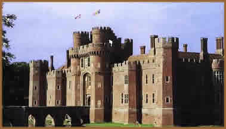

|
| |
A idéia da Idade Média
nos remete à cavaleiros, lordes e damas, combates com lanças
e cavalos e batalhas sangrentas - tudo isso, provavelmente, acontecendo
dentro ou nas cercanias de um castelo. Os castelos foram importantes
pontos estratégicos para conquistas e defesas de territórios
nos tempos medievais. Os projetos e a construção
dessas fortalezas variaram muito, e várias delas sobrevivem
atualmente.
O dicionário Merriam-Webster
Collegiate define um castelo como um "grupo de edificações
fortificadas". Mas uma definição mais
prática é a que um castelo era a fortificação
da Alta Idade Média (entre os séculos 5 e 15) equipada
com paredes altas, torres e um fosso. A palavra castelo
vem do latim castellum, que significa lugar fortificado.
A língua francesa popularizou o termo castelo
na Idade Média.
Castelos
& Palácios
Castelos e palácios eram residências
majestosas para nobres e reis, mas apenas castelos tinham muros
altos, torres e fossos. Embora os palácios fossem grandes
residências e pudessem ter muros ao seu redor, não
tinham muros altos de proteção e não eram
projetados para finalidades militares.
Os castelos serviam para um objetivo militar principal
- guardavam exércitos e atuavam como um quartel que controlava
um determinado território. Vários castelos eram
parte de cidades fortificadas e protegiam os vilarejos ao redor
em épocas de guerra e ataques. À medida que o tempo
passou, os castelos também se tornaram residências
para lordes e reis. Na transição da Idade Média
para a Idade Moderna, os castelos perderam suas funções
militares e passaram a funcionar como residências para a
nobreza ou foram abandonados.
História
dos castelos
Os castelos tiveram origem em cidades cercadas
por muros como Tróia, Babilônia, Jericó e
Micenas. Essas cidades tinham muros de pedras densos e altos com
portões que limitavam o tráfego de pessoas. Os soldados
ficavam em guarda nos portões e sobre os muros para defender
o castelo dos ataques.
O
primeiro tipo de castelo era um forte cercado chamado grod.
Um "grod" era formado por paredes de madeira e
argila (plataformas), uma ou mais pontes fortificadas e
um fosso ao redor de toda a construção. Um
segundo tipo de castelo antigo foi construído a partir
de torres altas e arrendondadas que o romanos construíram
por todas as suas fronteiras. A torre, chamada bergfried
(a parte mais forte) era feita de madeira (e pedra, a partir
do século 13). As "bergfrieds", encontradas
em toda a Alemanha, foram as anteces- soras das altas torres
dos castelos da Baixa Idade Média. O terceiro tipo
de castelo foi o do motte e bailey. Eles eram formados por
uma colina de terra (motte) e tinham na parte central um
amplo pátio (bailey) cercados por um muro de madeira
e por um portão. Na parte superior do motte havia
uma torre de madeira chamada torre de menagem. Um castelo
"motte e bailey" tinha as caracterísitcas
do "grod" e do "berfried". Tornou-se
popular durante o reinado de Carlos Magno na França
(800 d.C.) e foi muito utilizado por William, o Conquistador,
depois da tomada da Inglaterra pelos normandos em 1066.
Um castelo "motte e bailey" poderia ser construído
em poucas semanas ou meses.
Essas primeiras fortificações foram
a base para o desenvolvimento dos castelos medievais. As paredes
de madeira foram substituídas pelas de pedra e de tijolos.
Os muros de pedra eram mais fortes e poderiam ser muito mais altos.
Em alguns castelos, eram colocadas paredes internas,
formando um anel concêntrico e protegendo ainda mais a construção.
O pátio interno ficou maior e foi dividido em pátios
separados. A torre de menagem (donjon) ficou maior e passou a
ser feita de pedra - e seu nome mudou para fortaleza. Outras construções
foram acrescentadas aos pátios - como grandes salões,
palácios, capelas, residência para os cavaleiros
e locais de trabalho para os artesões. Várias torres
amplas e altas foram construídas dentro do castelo. Algumas
foram incorporadas aos muros externos, enquanto outras tornaram-se
estruturas separadas dentro dos pátios.
Características
do castelo
Os castelos serviram principalmente como acomodação
para as milícias da época, tornando-se depois residência
para os nobres, em suma, projetados para defesa. As construções
dos castelos medievais incorporaram projetos das primeiras fortificações
e melhoraram com o passar do tempo. Os projetos foram também
modificados para acompanhar as melhorias da tecnologia local.
Os castelos deveriam suprir as necessidades de moradia (como higiene,
saneamento, água limpa e cozinhas), fundamentais para quando
o castelo estivesse sob ataque.
Acompanhe os principais elementos de composição
de um castelo:
-
Defesas externas
-
Fosso
-
Muros (internos e externos)
-
Torres (internas e externas)
-
Cabine do portão, ponte
elevadiça e barbacãs
-
Defesas externas
-
Baileys ou pátios
-
Espaços habitacionais
e construções de apoio
-
Fortalezas ou torres de menagem
(donjons)
-
Grandes salões
-
Capelas
-
Estábulos
-
Poços
-
Oficinas de trabalho
Defesas externas
O fosso - um grande dique ou trincheira ao redor do muro
externo do castelo - era a primeira linha de defesa. Ele
poderia ser cheio de água ou seco (um fosso seco
poderia ser forrado com estacas pontiagudas de madeira).
Normalmente, havia uma ponte elevadiça que permanecia
erguida quando o castelo estivesse sendo atacado. Vários
fossos eram também locais para depósito de
lixo e detritos. A existência de um fosso dependia
do terreno - nem todos os castelos tinham fossos. Alguns
eram construídos no alto de uma rocha e não
precisavam deles. Os castelos de Edinburgo e de Stirling
na Escócia, por exemplo, estão no alto de
uma encosta rochosa. Vários castelos alemães
ao longo do Rio Reno foram construídos nas áreas
montanhosas do vale.
O
muro de proteção externo era alto, largo e
feito de pedra ou tijolos. Os muros poderiam medir entre
seis e dez metros de altura e de 1,5 a 8 metros de espessura.
Em vários castelos, a espessura do muro variava de
acordo com a região mais vulnerável.Os muros
de proteção eram formados por dois muros.
Os construtores quebravam e encaixavam as
pedras ou tijolos em cada muro e cimentavam tudo com argamassa
de calcário. Os espaços entre os muros eram
preenchidos com fragmentos de pedra, pequenos pedregulhos
e porções de argamassa.
À medida que a parede ficava mais
alta, eram colocados cadafalsos de madeira ou plataformas
de trabalho sendo possível finalizar a construção
trazendo materiais por rampas ou utilizando "guindastes"
movidos por homens ou animais. Quando essa parte do muro
era finalizada, a plataforma era destruída, entretanto
o vão onde estavam os apoios dela permanecia.
Alguns castelos tinham um muro externo muito
mais alto chamado parede-escudo. Essa parede era normalmente
colocada na parte do castelo que poderia ser especialmente
vulnerável às armas de ataque como catapultas,
trabucos e torres de cerco. Ela também servia de
proteção contra ataques de objetos que eram
lançados sobre os muros e atravessavam a defesa.
A maioria dos muros externos tinham muralhas na parte superior
do castelo como: blocos retangulares alternados com aberturas
na parte superior do muro ou da torre.
Os soldados ficavam atrás dos blocos
e atiravam através das aberturas. Alguns muros tinham
passarelas construídas na pedra, enquanto existiam
também passarelas de madeira dentro do muro, onde
os soldados podiam ficar em guarda e fazer defesa durante
a batalha.
As matacões eram um beiral
suspenso em madeira localizado na parte superior do muro.
Os franceses mais tarde usaram matacões de pedra
chamados machicoulis. Eles tinham buracos no assoalho
através dos quais atiravam-se flechas ou se derramavam
vários objetos (pedras, alcatrão quente, água
fervendo, óleo quente) sobre os inimigos. Os breteches
eram pequenas salas suspensas dos castelos franceses, semelhantes
às matacões, que sobressaiam dos muros. Feitos
de pedras, os brèteches tinham janelas ou
aberturas para lançar flechas, além de uma
abertura no chão. Quando sua formação
ascendia à parte superior do muro, era chamado de
guarita. Ainda, havia uma abertura para flechas, como uma
fenda ou orifício estreito nos muros e matacões
através da qual os arqueiros e besteiros lançam
flechas. Várias aberturas são largas numa
extremidade e vão afunilando à medida que
se segue para a parte externa do muro, sendo que este desenho
proporciona uma perspectiva mais ampla de visão.
Os embrasures eram uma abertura no formato
redondo anexada à abetura para flexas construída
no próprio muro ou na parede da torre e proporciona
ao arqueiro um campo maior de visão.
Defesas do castelo
As torres, essas estruturas altas, no formato redondo ou
quadrado foram construídas seguindo a altura do muros
ou nas suas extremidades. Normalmente, são mais altas
do que os muros e são construídas da mesma
forma. Torres arredondadas em sobressalentes ao muro ou
nas extremidades dão uma visão melhor para
defesa. Os muros têm fendas para as flechas, e a parte
superior pode ter matacões, ou ser aberta como ameia
ou ainda possuir uma cobertura.
Dentro
das torres, as escadas eram geralmente circulares (no sentido
horário ao subir), estreitas e feitas de madeira
ou pedra. O sentido horário era uma forma de defesa,
pois os soldados eram destros (pessoas canhotas eram consideradas
do mal, portanto elas aprendiam a lutar com a mão
direita). Subindo as escadas, os defensores tinham como
manejar a espada, entretanto quem atacava ao descer não
poderia fazer isso facilmente.
As cabines da ponte ficavam dentro do muro
e estavam ligadas à ponte sobre o fosso, mas eram
mais que apenas portas de entradas. As pontes eram normalmente
longos túneis com torres com abertura para flechas
em cada lado da entrada.
A abertura externa do túnel da cabine
era fechado por um portão de madeira ou ferro raspado
chamado portcullis. Os soldados podiam levantar o portcullis
com um guincho e baixá-lo enquanto estivessem sendo
atacados, dessa forma podiam lançar flechas através
das aberturas.
Na parte superior do túnel da cabine do
portão havia aberturas chamadas matacões através
das quais a defesa podia lançar objetos e derramar líquido
quente. Nas laterais do túnel havia também aberturas
para flechas. Finalmente, as cabines do portão tinham uma
porta pesada de madeira na abertura interna, através da
qual os soldados podiam fechá-la e trancá-la com
braçadeiras.
Esse mecanismo retrátil da ponte ficava
normalmente dentro da cabine. Algumas pontes elevadiças
subiam e desciam com um guincho, e algumas tinham um fulcro central
que fazia com que ficassem na perpendicular a ponto de formar
uma parede. Outras pontes elevadiças podem se estender
de modo que ficam paralelas ao fosso e não se conectam
com o outro lado. Algumas pontes têm uma estrutura fortificada
adicional na parte da frente ou em suas laterais chamadas barbacãs.
A barbacã era feita de pedra e tinha torres com abertura
para flechas e ameias.
Os muros internos e as torres eram construídos
como a parte externa. Tinham várias das mesmas características
(abertura para flechas, matacões, ameias) e os mesmos propósitos.
Os muros internos também dividiam os baileys ou pátios
em diferentes partes. Em alguns castelos, as torres internas eram
estruturas separadas.
Do ponto de vista militar, o "bailey"
ou pátio era um espaço aberto. Qualquer soldado
invasor que atravessasse o portão e entrasse no pátio
poderia ser exposto ao ataque de flechas vindas das torres e dos
muros externos e internos. O pátio também servia
como um mercado para festivais e feiras, um local para treinar
soldados e domar cavalos, bem como uma área para torneios.
Nos torneios, os cavaleiros combatiam com espadas e escudos e
lutavam em arenas chamadas justas (os combates são chamados
também de justa medieval). Na Baixa idade Média,
os pátios tinham jardins e fontes. Alguns castelos não
tinhas muros internos, e com isso os pátios também
continham as torres, a torre de menagem ou fortaleza (residência
principal) e construções auxiliares (grande salão,
capela, quartos para os cavaleiros e servos, cozinhas e oficinas
de trabalho).
Dentro
de um castelo
A fortaleza e as construções auxiliares
que formam o castelo variam de uma fortificação
para outra. Às vezes, as construções (como
a capela, o grande salão e as cozinhas) eram encontradas
dentro da torre principal, outras vezes não.
A torre principal era a residência principal
do governante. Era feita de pedra e poderia ter o formato quadrado
ou redondo. As torres principais poderiam estar integradas ao
muro ou à parte e tinham várias funções.
Os apartamentos residenciais continham camas e mobília.
Eram normalmente aquecidos por lareiras e a luz vinha através
das janelas.
O
grande salão podia estar na torre principal ou em uma construção
separada. Nos primeiros castelos, como o descrito no poema épico
"Beowulf", os grandes salões eram usados para
refeições e para dormir. Mais tarde, foram usados
para divertir e reunir a corte. Normalmente tinham o pé
direito alto e grande lareiras. O chão era geralmente de
pedra ou de terra batida. A despensa de comida, bebidas e ouro
era localizada nos andares inferiores da torre de menagem. A parte
relacionada à defesa do castelo (abertura para flechas,
depósito de armas, ameias) ficava nos andares superiores.
Os prisioneiros eram mantidos na masmorra. As masmorras
ficavam nas partes superiores da torre de menagem, porque era
mais difícil escapar, porém depois foram transferidas
para os andares inferiores.
A religião era importante na vida cotidiana
da Idade Média. As pessoas iam à igreja todos os
dias, normalmente na missa matinal. A maioria dos castelos tinha
suas próprias capelas e padres, fossem do próprio
castelo ou visitantes. As capelas poderiam ser salas simples da
torre principal ou requintadas construções à
parte. Os cavalos eram essenciais na vida medieval. Os cavaleiros
montavam neles durante a batalha. Os animais empurravam carroças.
Eles eram o meio de transporte da época. Logo, eles precisavam
de uma garagem - ou estábulos, que ficavam no pátio.
Por causa da ameaça do fogo, as cozinhas
nos primeiros castelos ficavam separadas da torre de menagem em
locais preparados para elas. Como as construções
em tijolo tornaram-se mais comuns, os projetistas mudaram as cozinhas
para dentro da torre.
Os poços e cisternas armazenavam água
para o castelo. Normalmente, a facilidade de ter água era
um fator primordial para o castelo resistir ou não a um
ataque. Os poços ficavam dentro da torre principal ou no
pátio. As cisternas eram reservatórios de água
da chuva que escorria do telhado. Alguns castelos tinham um encanamento
rudimentar que canalizavam a água das cisternas para as
pias.
Os castelos precisavam de vários artesões,
incluindo carpinteiros, ferradores e serralheiros para a manutenção
das construções e dos pátios. As oficinas
de trabalho deles eram locais separados dentro do pátio.
Mas, oque acontecia quando as necessidades fisiológicas
decidiam se manifestar enquanto os soldados estavam defendendo
o castelo durante um ataque? Havia várias opções:
os toaletes eram apenas buracos nas torres. As fezes caíam
- no pátio, do lado de fora do muro externo, no fosso ou
nas latrinas dentro da torre; o "garderobe" (ou "gardrobe")
era um quarto que era projetado externamente sobre o muro. Um
buraco no chão permitia que os dejetos caíssem;
alguns castelos tinham torres sanitárias dentro ou fora
dos muros. As fezes caíam numa latrina.
A construção
do castelo
A construção de um castelo era um
empreendimento caro: o rei Eduardo I quase quebrou as finanças
reais gastando cerca de 100 mil libras em seu castelo no País
de Gales. Três mil trabalhadores foram contratados (carpinteiros,
artífices, escavadores, mineradores e serralheiros) sob
a orientação de um mestre de obras (o mestre James
of St. George construiu os castelos do País de Gales, do
Rei Eduardo I). Os castelos normalmente levavam 10 anos para serem
concluídos.
Como experiência para o estudo de arqueologia,
Michel Guyot e Maryline Martin reuniram um grupo de 50 trabalhadores
(arquitetos, arqueólogos e especialistas) para construir
uma réplica de castelo medieval utilizando técnicas
e materiais utilizados na idade Média. O projeto, desenvolvido
na cidade de Treigny, na Borgonha, região da França
chama-se Projeto Gueledon. O projeto é baseado na arquitetura
de um castelo do século 12 - tem fosso, muros de proteção,
torres em cada canto do castelo e uma grande torre principal.
A construção começou em 1997, e a expectativa
é de durar uns 25 anos. Após o investimento inicial,
o custo do projeto vai ser pago com dinheiro do turismo. Em 2006,
o local recebeu mais de 245 mil visitantes, e o projeto arrecadou
cerca de US$ 2,6 milhões.
O
material da construção é de pedra, argila
e madeira de carvalho, encontrada nas redondezas. Os trabalhadores
usam técnicas tradicionais que remontam o século
13. Para separar as pedras para os muros, os mineradores "lêem"
os traços das pedras a fim de enxergar as linhas aonde
elas quebram. Eles fazem buracos na pedra e inserem quinas nesses
mesmos buracos, o que faz com que as ondas sejam quebradas nas
pedras.
Os trabalhadores utilizam vagões puxados
a cavalo para trazerem as pedras das minas para o local da construção.
Os artífices esculpem a pedra bruta em blocos. Os trabalhadores
usam guindastes movidos pela força humana para elevar as
pedras lapidadas para o cadafalso dos muros.
Outros trabalhadores fazem argamassa misturada
ao cal, argila e água. Os artífices encaixam as
pedras e usam a argamassa para unir os blocos. Os trabalhadores
também utilizam ferramentas tradicionais para medir e encaixar
as peças do castelo.
Por exemplo, os artesãos usam uma corda
comprida com nós a cada metro para medir as vigas de madeira
e encaixar as peças. Eles também utilizam esquadros
de madeira e compasso para medir. Utilizam um triângulo
de madeira com linha e prumo para medir quando estão colocando
as pedras.
À medida que aumenta a altura do castelo,
novos cadafalsos devem ser colocados e os antigos removidos, deixando
assim buracos nos muros. Em 2007, um terço do Castelo Guedelon
estava pronto. Uma vez terminado, está pronto para defesa.
Cercos
medievais
O exército invasor cercava o castelo e
cortava o abastecimento de comida e água na esperança
de matar de fome o inimigo. Na tentativa de disseminar doenças,
os invasores poderiam usar suas catapultas para lançar
sobre os muros dos castelos corpos humanos ou animais mortos ou
doentes. Lançavam também projéteis incandescentes
para causar prejuízos dentro do castelo. Esse método
para cercar era o mais utilizado porque o exército invasor
poderia negociar a rendição do castelo por muito
pouco. Mas isso levava meses de trabalho, e o exército
invasor deveria estar muito bem suprido com alimento e água
para agüentar a duração do ataque.
Se tinham tempo de preparo, a defesa poderia extender
a duração do cerco. Normalmente, traziam suprimentos
e pessoas das redondezas para dentro do castelo. A maioria dos
castelos tinha os próprios suprimentos de água para
essa situação. Além disso, a defesa poderia
queimar os arredores do castelo, dessa forma o exército
invasor não teria onde guardar seus suprimentos. Normalmente,
o resultado do ataque dependia se exército invasor ou a
defesa recebiam reforços antes.
Os invasores poderiam preparar enormes escadas
apoiadas sobre o muro de proteção externo. Os soldados
invasores poderiam subir as escadas para conseguir acesso ao castelo.
Entretanto, ficavam vulneráveis às flechas de fogo
e objetos jogados das ameias. A defesa poderia também empurrar
as escadas para trás.
Como alternativa, os invasores construíam
torres de madeira para o ataque e as enchiam de soldados. Outros
empurravam as torres para a base do muro de proteção.
Os soldados no alto da torre baixavam uma rampa, atravessavam
as améias e esperavam acabar com a defesa. As torres de
ataque davam cobertura para os soldados invasores, contudo eram
grandes e pesadas. Os invasores estavam vulneráveis ao
atravessar a rampa. Além do mais, a defesa poderia tocar
fogo nas torres com flechas incandescentes.
Se um exército invasor derrubava os portões,
poderia entrar no castelo muito facilmente. Usavam aríete
(toras de madeira) para bater no portão (ou às vezes
nos muros) e derrubá-lo. Alguns aríetes eram cobertos
para proteger os soldados invasores das flechas incandescentes
e dos objetos que eram jogados. Às vezes, os portões
de madeira de castelo eram incendiados para fragilizá-los.
Para se defender contra os aríetes, flechas
incandescentes eram lançadas (às vezes com fogo
nas pontas). Normalmente, muros de madeira ou até mesmo
"revestidos" por material almofadado poderiam ser baixados
para atenuar o impacto dos aríetes. Finalmente, poderiam
trancar as entradas ou pontes do castelo para resistir à
força dos choques. E, como foi mencionado, os portões
do castelo tinham matacões e abertura para flechas para
afastar os invasores que atravessassem as entradas.
Se um exército invasor podia criar uma fenda
num muro, também podia adentrar o castelo por intermédio
de um local sem defesas. Os invasores derrubavam os muros com
aríetes e lançavam pesados e incandescentes projéteis
de pedra contra e sobre os muros. Usavam catapultas, trabucos
(armas pontiagudas pesadas), e balistas (grandes bestas).
Uma outra maneira de derrubar os muros dos castelos
era miná-los. O exército invasor cavava túneis
sob os muros e inseria suportes de madeira. Uma vez que cavavam
o túnel profundo o bastante até chegar no outro
lado, incendiavam-no. Os suportes de madeira seriam destruídos,
e o muro sobre o túnel desabaria. Mas a defesa poderia
cavar sob os túneis do exército invasor antes que
chegassem ao muro. O cerco ao castelo poderia ser dessas três
maneiras. O processo era caro, cansativo e longo, mas necessário
para controlar o castelo e seu território.
O declínio
dos castelos
Após o século 16, os castelos entraram
em decadência como forma de defesa, principalmente devido
à invenção e ao desenvolvimento de pesados
canhões e morteiros. A artilharia poderia lançar
pesadas bolas de canhões com tanta força que nem
muros muito fortes agüentavam.
Geralmente, o castelo medieval abria caminho para
cidades fortificadas (quase como um reverso da história)
e fortes (como os da época colonial na América do
Norte). Ao invés de grandes muros de tijolos ou de pedra,
esses fortes tinham amplas plataformas argilosas com estacas de
madeira ou pedra no alto. A idéia era que camadas grossas
de pó absorveriam o impacto do canhão de fogo. Também
essas fortificações eram mais fáceis e mais
rápidas de construir do que os castelos. Durante a Revolução
Americana nas Batalhas de Bunker Hill e Dorchester em Boston,
o exército norte-americano organizaram suas posições
na véspera.
Os castelos
hoje
Em
seus dias de glória, os castelos eram encontrados em toda
a Europa e Oriente Médio. A maioria estava na Europa -
cerca de 10 mil só na Alemanha. Embora as inovações
da tecnologia militar e o custo alto da construção
tenham levado a era dos castelos ao seu fim, alguns foram tão
bem construídos que sobrevivem até hoje. Outros
são apenas ruínas, enquanto vários foram
restaurados. Os castelos "sobreviventes" são
utilizados para vários objetivos.
Alguns como o Castelo de Windsor, foram restaurados
durante os séculos 18 e 19 e servem de residências
para famílias ricas ou nobres. Locais históricos
e museus, como a Torre de Londres, o castelo de Warwich e Bodiam
na Inglaterra, servem como locais para informar e entreter o público
sobre a Idade Média. Alguns castelos foram convertidos
em hotéis, como o castelo Thornbury na Inglaterra e o La
Rocca di Monteggiori na Itália.
Vários magnatas da indústria no século
20 construíram casas que foram projetadas como castelos.
Embora essas casas sejam mais parecidas com palácios do
que com castelos de fato, elas são magníficas em
termos de arquitetura e são visitadas por vários
turistas todos os anos. O editor William Randolph Hearst construiu
o Hearst Castle na Califórnia. O magnata do setor hoteleiro
George Boldt construiu o Boldt Castle sobre o Rio São Lourenço,
no Estado de Nova York.
O industrial de Toronto Sir Henry Mill Pallatt construiu a Casa
Loma, em Ontário.
Castelo
de Himeji
Embora a maioria dos castelos tenha sido contruída
na Europa, existiram vários castelos japoneses. Um exemplo
é o Castelo de Himeji, próximo a Kobe, Japão.
Sua construção começou por volta de 1300
e continuou sob o governo de outros imperadores. O castelo era
de madeira, diferente da maioria dos castelos europeus, mas havia
uma torre central, muros e pátios. A entrada para o pátio
tinha matacões e aberturas para flechas. A entrada do castelo
é um labirinto que segue trilhas circulares com becos sem
saída que foram planejados para confundir o exército
invasor.
Extraído e
adaptado de hsw.uol.com.br

|
|
|
 |
|